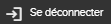

Pour des raisons de sécurité, Il faut se déconnecter après que vous avez fini
d'utiliser l'application. Cela empêche des autres perrsonnes d'avoir accès à
l'information.
-
Dans le coin supérieur droit de l'application, cliquez sur le bouton
Autres actions
 .
.
-
Dans le menu déroulant, cliquez sur le bouton

.
Vous êtes déconnecté du logiciel. La page de connexion apparaît.
Remarque :
Non applicable pour Pinpoint Standalone Light.
Si vous êtes connecté en tant qu'invité et que la possibilité pour les utilisateurs invités de changer de compte est activée, vous verrez le bouton dans la liste déroulante Autres actions . Cliquez sur ce bouton pour vous déconnecter de l'environnement public et afficher la page de connexion du contrôle d'accès.
Si cela est autorisé, votre administrateur peut activer la possibilité de changer de compte. Administrateurs, reportez-vous à la section "Activer l'accès des invités pour Pinpoint" dans le Flatirons Pinpoint Configuration Guide.